Update
- [ ] - 项目资产库
- AD资产库
2023-07-01
组装可自定义解算路径
- [ ] 解算abc
- [ ] xgen ABC输出路径
绑定文件对应不同材质文件问题
- 根据镜头可选绑定文件对应的材质文件版本
- 相关数据可写到Excel表格中
- 组装工具中指定材质资产版本
资产发布（AD）
- [x] - ABC类型支持Gpu类型（可携带基础材质信息）
- 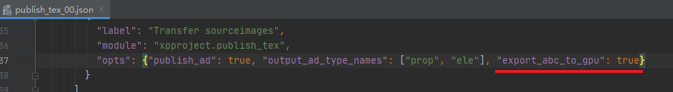
相机检查错误, 忽略锁定的属性
参考路径检查可指定多个路径，用逗号隔开

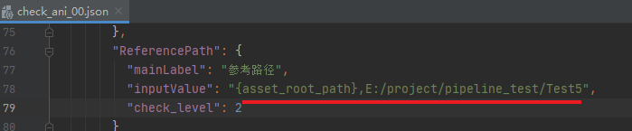
2022maya相关设置
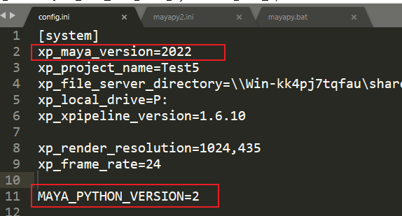
- 将原来的mayapy.exe 改名为 mayapy2.exe
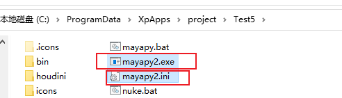
- 同时创建一个mayapy2.ini的文档
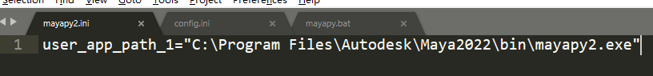
- 编辑mayapy.bat
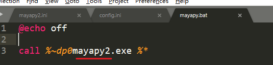
2023-06-27
- 如果项目文件夹, 不在盘符根目录下, 可编辑这个参数
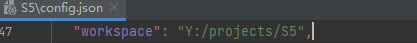
2023-06-26
- 获取灯光基础文件（渲染、渲染层设置的文件）
设置文件参数是列表类型，系统会从列表最后一个开始匹配(最后的优先级最高)
依次通过场次、镜头号等匹配到适合当前镜头的基础设置文件
灯光文件规则同理
-
lgt_base_set_file 渲染基础设置文件
-
lgt_light_file 标准灯光文件
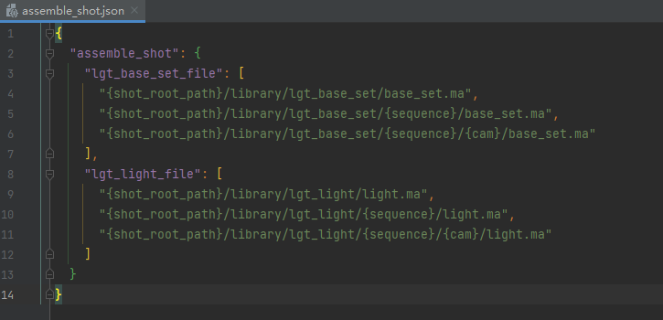
- hair毛发代理中包括了模型问题
- 根据xgen类型获取需要导出的节点
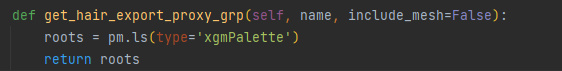
- 渲染测试文件输出路径设置
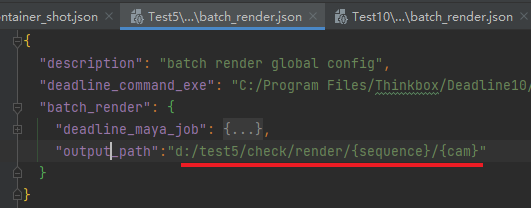
- 自定义资产AD输出路径
- 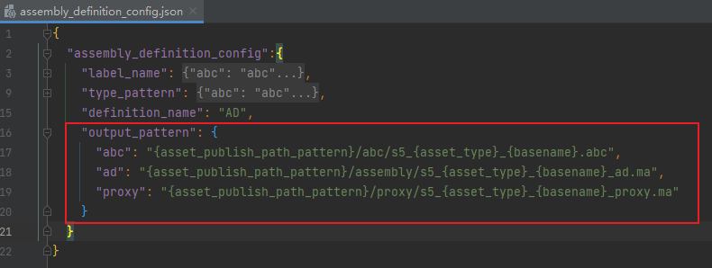
2023-06-15
- 镜头管理中，右键显示资产信息
- 可自定义的文件快速访问